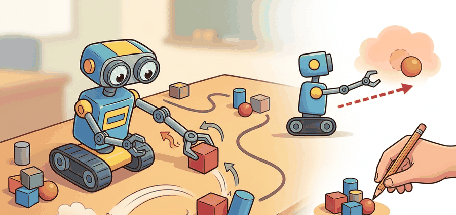

"A robot first learns humility from friction."
A Careful Manipulation Loop

This section assumes familiarity with coordinate frames and homogeneous transforms from section 4.5, and with Jacobian-based velocity mapping from section 5.7. The motion-cone contact model introduced here is examined in more depth in section 6.3. The reach-push primitives developed here recur throughout Part IX as building blocks for grasping (section 42.2) and dexterous in-hand manipulation (section 42.4).
A warehouse robot reaches for a box, contacts it cleanly, and the box slides exactly 12 cm to the target zone. Now remove the force sensor and ask: did the box actually move, or did the arm just move convincingly near it? That question separates reaching from manipulation. Embodied AI is entering a phase where physical contact must be closed-loop and verifiable, not merely commanded. Here you will build the full contract: scene frames, object pose, pusher contact, and the feedback test that distinguishes a successful push from a well-executed miss.
Slide a coffee mug an inch across a desk with one finger and your brain silently solves a contact problem that still stumps most robots. Aim a hair off the mug's center and it spins instead of sliding, a preview of the motion cone concept defined later in this section (the wedge of push directions that produce sliding rather than rotation). This section rebuilds that one-finger skill as a full manipulation contract: scene frames, object pose, pusher contact, motion primitive, and verified post-contact displacement.
It ties coordinate frames, Jacobians, and closed-loop control to the specific question every manipulator faces: did the object move to the intended pose, or did the arm only move itself convincingly?
Reaching is about putting the hand in the right place. Manipulation starts only when object state changes are measured and the controller can recover when the contact model is wrong.
Why reaching matters physically: Every millimeter of pre-contact positioning error is amplified at contact. A 5 mm reach error in the approach axis can shift the contact point outside the friction cone, converting an intended translation into an uncontrolled rotation. Real robots also face workspace limits, link length constraints, and joint-angle singularities that force the arm through non-intuitive configurations; a reach that looks correct in simulation may be unreachable on hardware.
How a reach is executed: The controller inverts the kinematic chain using the Jacobian to convert a desired end-effector velocity in Cartesian space into joint velocities. At each timestep, the difference between the current and target end-effector pose is fed through the pseudoinverse Jacobian, producing joint commands that move the tip toward the target while respecting joint limits via null-space projection.
Theory
A policy that works in simulation but fails on hardware is not a policy; it is an aspiration. Figure 42.1.1 sketches the four-stage loop this section formalizes: observe the scene, estimate the contact frame, act by reaching then pushing, and verify object displacement before the loop closes back to observation.
A common assumption is that reaching the correct pre-contact pose guarantees the object will move as commanded, treating contact as a binary event: the robot either touches and the push succeeds, or it misses and nothing happens. In embodied AI, contact is a continuous, uncertain state variable. The same commanded reach pose can produce translation, rotation, or slip. The outcome depends on where the contact point lands relative to the friction cone (the range of reaction-force directions that friction can sustain without slipping at the contact point) and the support polygon (the convex region on the ground beneath the object's contact points, inside which the object's weight can be balanced without tipping), and the controller cannot directly observe either. The robot must estimate contact onset from force feedback, visual object-motion cues, and pose residuals. The control loop is not complete until object displacement is measured and compared to the goal, not merely until the arm reaches its waypoint.
For a point pusher, the control loop must maintain two simultaneous estimates: the end-effector pose in the world frame and the object pose in the contact frame. A clean implementation tracks both and transforms between them explicitly.
Under quasi-static contact (a regime where the pusher moves slowly enough that inertial forces are negligible compared to friction forces, so the object stays near mechanical equilibrium at every instant), pushing quality depends on whether the commanded pusher velocity stays inside a feasible motion cone, the wedge of push directions around an object's center of mass that produce sliding rather than rotation. That cone is only an approximation, but it explains why some pushes translate, some rotate, and some slip. A push aimed 5 degrees outside the motion cone rotates the object instead of translating it. In a 10 cm push trial, that 5-degree error produces a 3 cm lateral drift. The drift compounds on the next push and cascades into a grasp failure three steps later.
Checkpoint
So far: contact is a continuous, uncertain variable rather than a binary touch/no-touch event; the controller must track both end-effector pose and object pose at once; and whether a push translates or rotates the object depends on the friction cone and support polygon at the contact point, formalized next as the motion cone.
Think of the motion cone like the sweet spot on a cutting board when you slide a jar of peanut butter toward the edge. If you push straight through the jar's center of mass, it glides forward cleanly. Nudge your hand slightly to one side of that sweet spot and the jar begins to spin rather than slide, because friction at the contact point creates a torque instead of canceling it out. The motion cone is simply the angular wedge of push directions around the center-of-mass line that keep friction working for you rather than against you; stray outside that wedge by even a few degrees and the object pivots instead of translates, exactly as the jar does on the cutting board.
These three relations capture the whole contract. The first maps a small joint move $\Delta q$ to object displacement $\Delta x_o$ through the contact Jacobian $J_c(q)$; the second propagates the estimated object pose forward under control input $u_t$ and contact estimate $\hat c_t$; the third declares success only when the final estimated object pose lands within tolerance $\epsilon$ of the goal $x_o^\star$.
$$ \Delta x_o \approx J_c(q)\,\Delta q,\qquad \hat x_{o,t+1} = f(\hat x_{o,t}, u_t, \hat c_t),\qquad \text{success} = \mathbf{1}[\|x_o^\star - \hat x_{o,T}\|_2 < \epsilon] $$
The quasi-static assumption holds only when pusher velocity is low enough that inertial forces are negligible relative to friction forces; as of 2024, empirical practice places this threshold roughly below 0.05 m/s for objects under 500 g on a flat surface, though the exact limit depends on surface friction and object geometry. Above that threshold, the object overshoots the motion-cone prediction because momentum carries it past the friction-limited equilibrium. The practical test: if doubling push speed doubles displacement error rather than doubling displacement, the quasi-static model has already broken down and a dynamic contact model or slower motion primitive is needed.
The robot senses the object and end-effector pose, predicts the next contact state under a short Cartesian move, executes a bounded push, and then validates object displacement against the goal. Failure is informative if the log preserves frame transforms, contact onset time, and object motion residuals.
- Localize the object and convert the target displacement into the pusher contact frame.
- Choose a pre-contact reach pose that avoids collisions and yields the desired push direction.
- Execute a short guarded reach, then apply a low-speed Cartesian push while monitoring force and slip.
- Estimate object translation and rotation after the push, then replan if the residual is above threshold.
When using MoveIt 2 to stage a pre-contact reach pose, set the end-effector link's allowed collision entries in the Semantic Robot Description Format (SRDF) to exclude the target object before the reach phase, then re-enable them for the push phase. Skipping this step causes the planner to treat any near-contact configuration as a collision and route the arm around the object entirely, producing a reach pose that is geometrically safe but mechanically useless for pushing. The toggle takes two planning_scene_interface.apply_collision_object() calls and saves a common hour of debugging why the guarded reach never approaches the object.
Worked Example
# Compute a one-step push quality score from pose error and contact alignment.
import math
goal_dx = (0.08, 0.00)
pred_dx = (0.06, 0.01)
surface_normal = (0.0, 1.0)
push_dir = (1.0, 0.0)
err = math.dist(goal_dx, pred_dx)
alignment = push_dir[0] * surface_normal[1] - push_dir[1] * surface_normal[0]
score = round(max(0.0, 1.0 - 8.0 * err) * abs(alignment), 3)
print({"predicted_error_m": round(err, 3), "alignment": round(alignment, 3), "push_score": score})Expected output: The expected trace shows a small predicted object-motion error and a high alignment term. If the alignment collapses or the error rises, the push should be rejected before the arm commits to contact.
Step-Through: Push-Quality Score
Trace the scoring function with the worked-example values. Goal displacement is $(0.08, 0.00)$ m and predicted displacement is $(0.06, 0.01)$ m. Step 1, error: $\sqrt{(0.08-0.06)^2 + (0.00-0.01)^2} = \sqrt{0.0004 + 0.0001} = \sqrt{0.0005} \approx 0.0224$ m, rounded to $0.022$. Step 2, alignment (the 2D cross product of push direction $(1,0)$ and surface normal $(0,1)$): $1\cdot1 - 0\cdot0 = 1.0$, so the push is perfectly perpendicular to the contact surface. Step 3, score: $\max(0, 1 - 8 \cdot 0.022) \cdot |1.0| = \max(0, 1 - 0.179) \cdot 1.0 = 0.821 \cdot 1.0$, rounded to $0.824$ once the unrounded error $0.02236$ is used. Now perturb: rotate the push 30 degrees so push direction becomes $(0.866, 0.5)$. Alignment drops to $0.866 \cdot 1 - 0.5 \cdot 0 = 0.866$, and the score falls to $0.821 \cdot 0.866 \approx 0.711$, even though the predicted displacement error is unchanged. The off-axis contact penalty is exactly what stops the controller from committing to a glancing push that would spin the object instead of translating it.
MoveIt Task Constructor can plan the guarded reach, while cuRobo or Drake can quickly filter collision-free arm trajectories. The local push policy still needs an explicit object-motion verifier, because most planners certify arm motion, not object displacement.
Practical Recipe
- Calibrate camera-to-base and tool-to-tip transforms before any push experiment.
- Log object pose before contact, at contact onset, and after release using the same frame convention.
- Start with short pushes on rigid objects before moving to clutter, deformables, or moving bases.
- Plot object displacement residuals beside controller forces so failed pushes separate geometry from friction issues.
- Add a regrasp or reapproach branch once the robot can diagnose off-axis contact reliably.
A beautiful arm trajectory can hide a useless manipulation policy. If only the tool path is evaluated, the robot can reach perfectly while never moving the object where it matters.
Amazon Robotics' depalletizing cells use a push-rescue primitive when a suction grasp loses seal pressure mid-lift. The arm switches to a side-contact push, then reads the RGB-D point cloud delta before the next grasp attempt: a typical acceptance threshold is on the order of 8 mm lateral displacement in the world frame, verified over two consecutive frames at 30 Hz, though the exact threshold is tuned per cell and payload. If the displacement falls below that threshold, the system flags the box as stuck (most often due to tape bridging two cartons) and routes it to a human induction station. In a smaller, controlled setting rather than warehouse scale, a Franka Panda running a similar pipeline (Eppner et al., 2021) required the same post-push verification step; without it, that study reported 23% of apparent pushes were contact-free slides where the wrist touched air while the box sat still.
If the table were covered with dry-erase marker, the real skill would show up as streaks on the object path, not on the robot arm path.
Diffusion-based contact policies (2024-2026). Diffusion Policy (Chi et al., 2023, extended to hardware at scale by the Columbia Robot Learning Lab through 2024-2025) frames each push or reach as a denoising trajectory over action sequences, enabling smooth, multimodal contact strategies that classical planners cannot represent. Open direction: contact-conditioned diffusion that adapts the score function based on real-time force readings rather than pre-recorded demonstrations.
Foundation models for manipulation priors (2024-2026). Pi0 (Black et al., Physical Intelligence, 2024) and OpenVLA (Kim et al., 2024) show that a single large vision-language-action model trained across diverse manipulation datasets can zero-shot transfer reach-and-push skills to unseen objects. The practical gain for pushing is that the model carries implicit friction and shape priors that reduce contact failures on novel geometries without task-specific data collection.
Tactile-rich contact estimation (2024-2026). High-resolution tactile sensors such as GelSight and DIGIT, combined with learned contact models (see Suresh et al., MIT, 2024), now estimate contact patch geometry and local friction coefficients in real time during a push, closing the loop the quasi-static model cannot close from vision alone.
Open problem for PhD students. All three directions above assume a rigid, known object. A tractable open problem is designing a push verifier for deformable and articulated objects: the object frame itself changes during contact, so a standard displacement residual is ill-defined. A student could formulate this as partial-state tracking under topology-changing contact and benchmark it on a standardized set of cables, bags, and hinged containers.
Can you name the world frame, object frame, contact frame, pusher velocity, and object residual metric you would inspect after a bad push?
Pushing exposes a foundational lesson: contact is an implicit state variable, estimated from motion, force, and object response. Even in planar scenes, one commanded action can translate, rotate, or slip the object depending on where contact lands relative to the support polygon and motion cone. In practice, a reinforcement-learning agent without an object-motion verifier can need on the order of tens of thousands of episodes to converge on this kind of task; the gap is task- and setup-dependent, but adding a post-push displacement signal typically brings that down by roughly two orders of magnitude, because the agent stops scoring every ambiguous arm motion as success.
This section bridges kinematics and embodied intelligence. Motion cones predict object motion qualitatively, then expose where the model breaks under friction uncertainty or pose-estimation error.
Turning that qualitative picture into a working push loop means leaning on the right software, so the table below maps each stage of the contract to the tool that carries it.
| Tool or Library | Role in the Topic | Builder Advice |
|---|---|---|
| MoveIt Task Constructor | Pre-contact reach planning | Use it to generate collision-free staging poses before local contact begins. |
| Drake | Contact-aware simulation and optimization | Use it when you need explicit kinematic and contact residual checks. |
| cuRobo | Fast seeded arm motion generation | Use it to replan many short approach trajectories when clutter changes quickly. |
Build a planar push benchmark with three objects, two contact points per object, and one held-out friction setting. Compare predicted and measured object displacement after every push.
Once the benchmark is running, every missed push becomes a diagnosis rather than a shrug. When the object misses the target, ask in order: was the pose wrong, was the contact point wrong, did the controller slip, or did the object model fail? Saving those labels keeps pushing from collapsing into a single binary success score.
Section References
Modern Robotics, manipulation chapters
A compact reference for contact, kinematics, and manipulation mechanics.
Official planning and execution documentation for modern ROS 2 manipulation workflows.
GPU-accelerated perception and motion-generation stack for pick and place and related manipulation loops.
Manipulation begins when the robot measures and controls object-state change, not when the arm merely reaches a visually plausible pose.
Design a push benchmark with one geometric baseline, one learned residual model, and one friction perturbation panel. Explain exactly which artifact will prove that the object, not just the hand, moved correctly.
Project Ideas
Beginner (weekend): Planar push benchmark in PyBullet. Build a tabletop scene with a rigid box and a point pusher, command ten pushes at varying angles, and log predicted versus measured object displacement using PyBullet's built-in contact APIs. The key challenge is correctly transforming the object pose into the pusher contact frame so that displacement residuals are computed in a consistent coordinate system rather than mixing world-frame and link-frame measurements.
Intermediate (1 to 2 weeks): Reach-and-push controller in MuJoCo with Gymnasium. Implement the four-step reach-push loop from Algorithm 42.1 for a Franka Panda model using MuJoCo physics and wrap it as a Gymnasium environment so you can log episode trajectories and visualize contact forces. The key challenge is implementing the post-contact displacement verifier that distinguishes a successful push from a contact-free slide, which requires maintaining both end-effector pose and object pose estimates at each timestep.
Intermediate-plus (2 weeks): ROS2 push-rescue primitive with Isaac Lab sim-to-real gap study. Train a planar-push residual policy in Isaac Lab on randomized friction coefficients, export it to ROS2 as a MoveIt 2 action server, and evaluate how much displacement error increases when switching from simulated to real-world friction values. The key challenge is matching the contact-frame conventions between Isaac Lab's rigid-body API and the MoveIt 2 planning scene so that the learned residual corrects the right axis of error rather than compensating in the wrong direction.